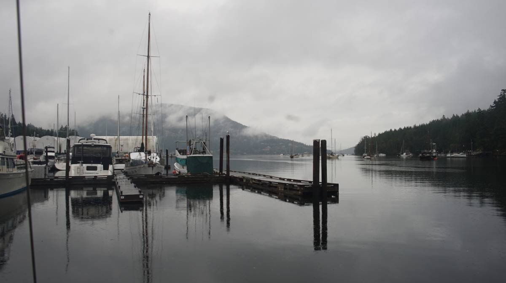

maple bay
Note. What we refer to on this page as Maple Bay, is on the traditional, stolen, unceded, overlapping and/or shared territory land of the WSANEC indigenous bands, as well as the Stz'uminus, Semiahmoo, and Quw’utsun First Nation people, of the Hul’qumi’num speaking peoples, and of the Cayuse, Umatilla and Walla Walla nations.
After our haul out at the Westport Boatyard, we sailed on to Genoa Bay. Pino had a clean, smooth bottom, and glided downwind with ease. We stayed there for the night of the 7th of June 2023, to see our friend Peter who was there working on his boat(s). We spent a nice evening together on Julia's boat. We spent much time petting Finnigan, Julia's icelandic sheepdog. We didn't sleep well that night, because the wind rose up around 2 am, funneling into the bay from the north. The bay is sheltered from that direction, but the surroundings hills accelerate the wind. All in the anchorage were outside, headlamps on, checking their gear, making sure all was well. Eventually, it subsided, and we went back to bed.
Morning of the 8th, we waited for 15h, for the tide to turn in our favor to make a run up to Maple Bay through Sansum Narrows. The current there isn't overly strong, but sailing in these waters, we learned that even a small opposing current can create a very big mess. We had wind in the back to start, but the wind left us quickly and we had to motor. The wind returned near Burgoyne Bay, and propelled us on into Maple Bay.

The last time we were here was in 2016. When we learned how to sail, going to Maple Bay had been on our first ever trip. We remembered Birds Eye Cove being busy, but thought that perhaps we could find room to anchor there, squeezing inbetween boats on moorings. We were wrong. There is no room to anchor. The space between the marinas and the mooring field has to stay clear because of both marina, and float plane traffic. Anchoring at the north end of the mooring field was also not an option because of a submarine cable, and then it gets too deep, and unsheltered.

We wandered over near the public dock at the northwestern end of the bay to see if that anchorage was an option. Again, all shallow waters are occupied by moorings, the rest is too deep... not to mention, the anchorage itself is very exposed. Tired of searching, and saddened by the lack of anchoring options for transients, we called up Maple Bay Marina on VHF 66A, and asked for a slip.
This marina is not overly expensive (1.90$/ft), even cheaper for us since we don't connect to shore power. The docks were empty, we suspect the coming grey weather was to blame.
A veil of thick, and constant rain soon envelopped the area, enough to put out the fires blazing in Port Alberni, we hoped.
